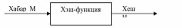

А с о с и й т у ш у н ч а л а р
Хеш-функция h:>>Y деб, иҳтиёрий узунликдаги М маълумотни фиксирланган узунликдаги h(M)=H кийматга акслантирувчи, осон ҳисобланадиган бир томонлама функцияга айтилади (1-расм).

1-расм. Хэшни шакллантириш схемаси
Хеш-функциялар:
статистик тажрибалар ўтказишда,
мантикий қурилмаларни текширишда,
тез қидириб топиш алгоритмларини тузишда
маълумотлар базасидаги маълумотларнинг тўлалигини текширишда кўлланилади.
Масалан, ҳар хил узунликдаги маълумотларнинг катта руйхатидан керакли маълумотни тез кидириб топишда бу маълумотларни бир-бири билан таккослашдан кура, уларнинг назорат йигиндиси вазифасини бажарувчи хеш кийматларни солиштириш кулайрокдир.
Хеш қиймат бошқа номлар (“хеш код”, “свертка”, “дайджест”, “бармок излари”) билан ҳам юритилади.
Ҳар кандай хеш-функцияга куйидаги талаблар куйилади:
Иҳтиёрий узунликдаги матнга қўллаб бўлади.
Чиқишда тайинланган узунликдаги кийматни беради.
Иҳтиёрий берилган H бўйича h(x)=H тенгликдан х ни ҳисоблаб топиб бўлмайди (бир томоламалик хоссаси).
Иҳтиёрий берилган х буйича h(x) осон ҳисобланади.
Олинган х ва ??x матнлар учун h(x)?h(y) бўлади (Коллезияга бардошлилик хоссаси).
Криптографияда хеш-функциялар куйидаги масалаларни хал қилишда ишлатилади:
- маълумотларни узатишда ёки саклашда унинг тўлалигини назорат қилиш учун;
- маълумот манбаини аутентификация қилиш учун.
Маълумотларни узатишда ёки сақлашда унинг тўлалигини назорат қилиш учун ҳар бир маълумотнинг хеш киймати ҳисобланилади ва бу киймат маълумот билан бирга сакланилади ёки узатилади. Маълумотни кабул килган фойдаланилувчи маълумотнинг хеш кийматини ҳисоблайди ва унинг назорат киймати билан таккослайди. Агар бу кийматлар мос келмаса, маълумот узгарганлигидан далолат беради.
Хеш-функциялар икки мухим турга, калитли ва калитсиз хеш-функцияларга бўлинган.
Калитли хеш-функциялар симметрик криптотизимларда фойдаланилади. Бошқа ном билан улар маълумотни аутентификация қилиш кодлар ҳам дейилади. Улар бир-бирига ишонувчи томонларга қўшимча воситаларсиз манбанинг хакикийлиги ва маълумотнинг тўлалигини кафолатлайди.
Калитсиз хеш-функциялар хатоларни аниқлаш кодлари деб ҳам юритилади. Калитсиз хеш-функциялар қўшимча воситаларсиз маълумотнинг тўлалигини кафолатлайди. Бу хеш-функциялар бир-бирига ишонувчи ҳамда бир-бирига ишонмайдиган томонлар орасида ишлатилади.
Одатда калитсиз хеш-функциялар куйидаги хоссаларни каноатлантириши шарт:
- бир томонламалик;
- коллизияга бардошлилик;
- хэш кийматлари тенг булган иккита маълумотни топишга бардошлилик.
Кенг фойдаланилувчи оммабоп хэш-функциялар сифатида MD2, MD4, MD5, SHA ва ГОСТ Р 34.11-94 номли функцияларни атаб ўтиш мумкин. MD2, MD4 ва MD5 хэш-функциялар Р.Райвест томонидан ишлаб чикилган бўлиб, уларнинг ҳар бири 128 битли хэш-кодни тузади. MD5 алгоритми MD4 алгоритмининг модификацияси бўлиб, MD4 алгоритмида хавфсизликни оширилиши эвазига тезликдан ютказилган. SHA (Secure Hash Algorithm) 160 битли хэш-кодни тузувчи ахборот дайджестини ҳисобловчи алгоритм бўлиб, бу MD4 ва MD5 алгоритмларига нисбатан ишончли.